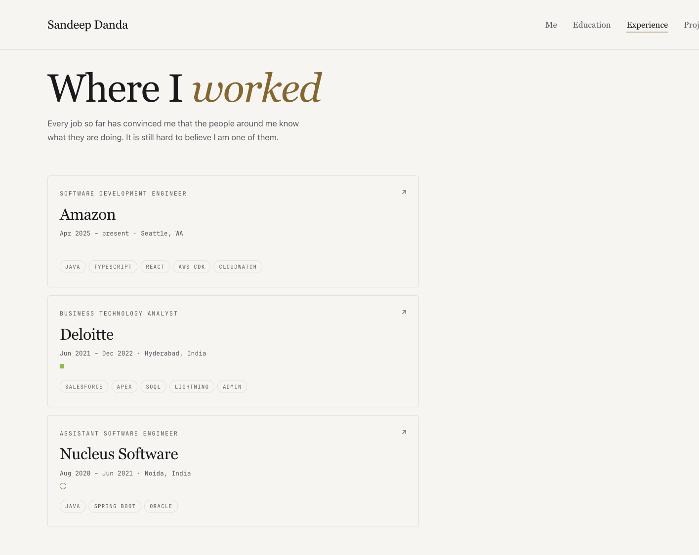
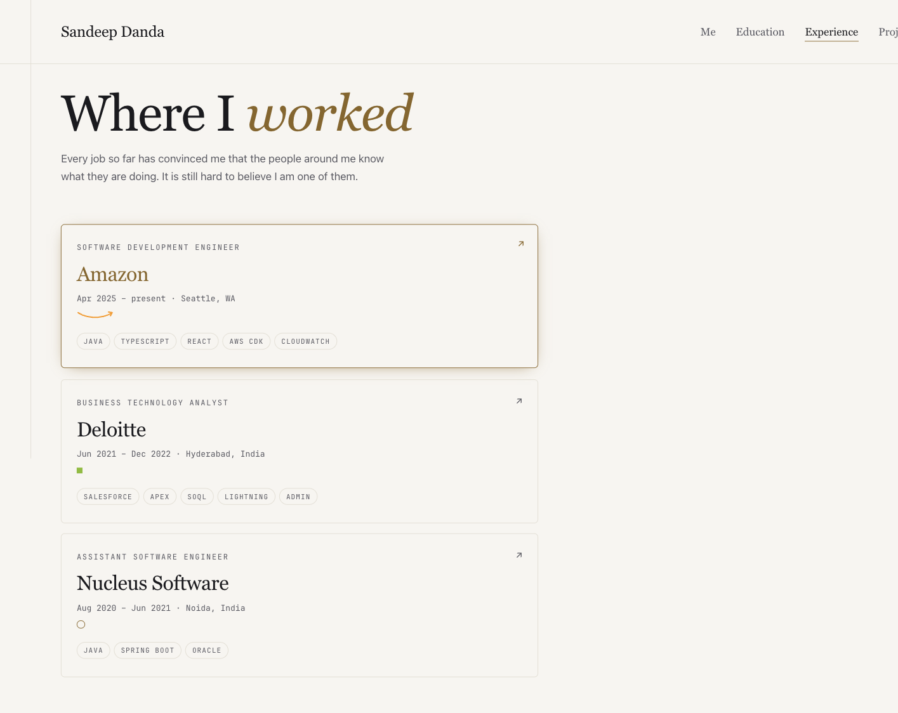

Astro portfolio (editorial-brutalist). Implemented Batch 2 of the animation backlog: brand-true hover marks on the Experience cards, drawn inline, restraint-first, reduced-motion safe.
✓ build green (11 pages) ✓ 3 marks render ✓ hover draw verified in browser ✓ 0 console errors
BrandMark.astro takes a company prop and renders one small motif into each Experience card. On hover the Amazon smile arrow draws itself (stroke-dashoffset 80→0), the Deloitte green square (#86BC25) pulses, and the Nucleus thin accent ring spins 360°. Every animation sits behind prefers-reduced-motion: no-preference; reduce mode shows the Amazon arc static. Matches the spec in docs/design/animations-todo.md exactly — brand-true, one animation per action, no decoration.
animations-todo.md) fully unimplemented for brand marksBrandMark.astro — one component, company prop, reusable for later batches.bm-amazon-arc, .bm-amazon-tip {
stroke-dasharray: 80;
stroke-dashoffset: 80; /* hidden by default */
}
@media (prefers-reduced-motion: no-preference) {
.bm-amazon-arc { transition: stroke-dashoffset 500ms ease-out; }
.card:hover .bm-amazon-arc { stroke-dashoffset: 0; } /* draws */
.card:hover .bm-amazon-tip { stroke-dashoffset: 0; transition-delay: 300ms; }
}
<Card href={j.url} label={j.role} headline={j.company} tags={j.tags}>
<Fragment slot="meta">...</Fragment>
<BrandMark company={j.brand} slot="body" />
</Card>
// brand: "amazon" | "deloitte" | "nucleus"


| Check | Result |
|---|---|
npm run build (Node 22) | 11 pages, exit 0 |
| All 3 brand marks present in DOM | amazon · deloitte · nucleus |
| Amazon arc draws on hover (computed style) | dashoffset 80px → 0px |
| Reduced-motion fallback rule present | verified |
| Console errors on /experience | 0 |
| Batch 1 (nav underline sweep, theme-toggle morph, portrait fade-in) was already shipped in earlier phases — confirmed in code, not re-done. | already done |
| Batches 3–6 (education marks, project motifs, contact cards, home hero) — not started; next increments. | later |
| Phase 8 (Cloudflare Pages deploy) — outward-facing, needs your account. Left to you. | needs you |
Review the diff, then git add / commit. | needs you |